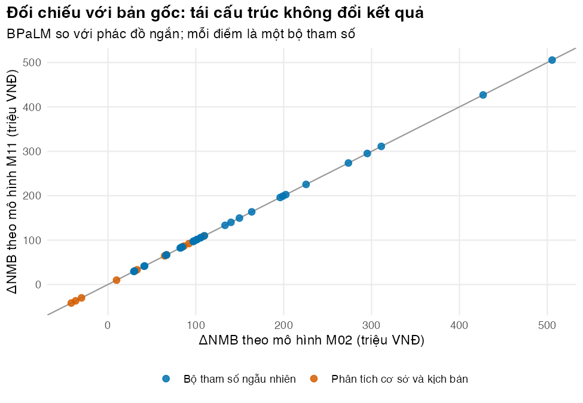

# Vietnamese text in tables and figures needs a UTF-8 locale (Rscript may start in "C")
if (!isTRUE(l10n_info()[["UTF-8"]])) invisible(Sys.setlocale("LC_CTYPE", "en_US.UTF-8"))
source("../_shared/R/helpers.R")
source("../_shared/R/vn_data.R") # course-wide values (used by M02 and by the checks)
source("code/model.R") # the refactored model (this module)
library(ggplot2)
m02_dir <- "../m02-cohort-markov"
# ONE complete parameter table: M02's file + the shared course values + the life table,
# written to a temporary file and read back exactly as the tests and the package read it
tab_all <- assemble_params(file.path(m02_dir, "params/mdrtb.csv"), "../_shared")
param_file <- write_param_table(tab_all, file.path(tempdir(), "mdrtbvn-params.csv"))
p <- read_param_file(param_file)
ptab <- attr(p, "table")
# Load each version of the model into its own environment, so functions with the
# same name (run_cea, compare_regimens, ...) cannot overwrite each other
m02 <- new.env()
sys.source(file.path(m02_dir, "code/model.R"), envir = m02)
m11 <- new.env()
sys.source("code/model.R", envir = m11)Bài 1: Cấu trúc mã cho mô hình
Tách đầu vào, mô hình và đầu ra; gom một bảng tham số đầy đủ; viết hàm thuần; tái cấu trúc mà không đổi kết quả
Vì sao bạn nên quan tâm?
Theo bảng giá BHYT năm 2025 của Bệnh viện Bạch Mai (Bộ Y tế 2024), một tháng theo dõi người bệnh lao kháng thuốc điều trị ngoại trú gồm 5 dịch vụ (khám, soi đờm, nuôi cấy, công thức máu, chức năng gan - thận) có giá 565,100 VNĐ, gần bằng 14 bát phở (Nhadautu.vn 2025). Bảng giá áp dụng từ ngày 26/5/2026 nâng tổng này thêm khoảng 4% (Bộ Y tế 2026). Nếu đơn giá, ngưỡng chi phí-hiệu quả và bảng sống nằm rải rác trong nhiều script, chỉ cần quên sửa một chỗ là mô hình vẫn chạy nhưng cho con số sai. Bài này giúp bạn quyết định tổ chức mã thế nào để mỗi thay đổi chỉ phải sửa ở một nơi, và chứng minh rằng việc sắp xếp lại không làm đổi kết quả.
Mục tiêu học tập
Sau bài này, bạn có thể:
- Giải thích vì sao mô hình kinh tế y tế cần được tổ chức như phần mềm, và nêu các thành phần của một khung chuẩn viết mã mô hình (coding framework) đã công bố.
- Sắp xếp một dự án mô hình theo ba lớp đầu vào–mô hình–đầu ra, với bố cục thư mục cố định và một bảng tham số đầy đủ.
- Viết hàm thuần (pure function) và phát hiện phụ thuộc ẩn bằng
codetools. - Tái cấu trúc mã (refactoring) và kiểm tra kết quả không đổi bằng kiểm thử đối chiếu với bản gốc (golden-master test).
Ý chính
- Mô hình kinh tế y tế là phần mềm, và lỗi kỹ thuật trong các mô hình nộp cho cơ quan đánh giá công nghệ y tế rất phổ biến (Radeva và c.s. 2020).
- Mã mô-đun (modular code) có ba lớp: đầu vào (ghép, đọc, kiểm tra, cập nhật tham số), mô hình (tỷ suất → ma trận chuyển → vết đoàn hệ (Markov trace)), đầu ra (tổng có chiết khấu → đường biên và quyết định).
- Mọi thứ mô hình đọc nằm trong một bảng tham số, kể cả giá trị chung của khóa học (ngưỡng, chiết khấu, giá, bảng sống). Bảng được ghép từ nguồn bằng mã, không gõ lại.
- Hàm thuần: cùng đối số, cùng kết quả; không đọc biến toàn cục, không ghi tệp, không vẽ hình. Nhờ vậy dễ kiểm thử, dùng lại, đóng gói.
- Phụ thuộc ẩn là lời gọi tới hàm hay biến không định nghĩa trong tệp: chạy ở máy tác giả, hỏng ở máy khác.
codetools::findGlobals()liệt kê chúng. - Tái cấu trúc đổi cấu trúc, giữ nguyên hành vi, và chỉ an toàn khi có kiểm thử đối chiếu bản mới với bản cũ trên nhiều bộ tham số, gồm các nhánh quyết định hiếm gặp.
- Đối chiếu chỉ phát hiện thay đổi, không phát hiện sai: bản gốc có lỗi thì bản mới thừa hưởng. Kiểm tra tính đúng là việc của Bài 2.
Nội dung
Vì sao cần kỹ thuật phần mềm
R cho phép mô hình phức tạp hơn, phân tích bất định đầy đủ hơn, minh bạch và tái lập được (Incerti và c.s. 2019; Jalal và c.s. 2017); chọn Excel hay R với Shiny nên dựa trên người dùng, độ phức tạp, tần suất cập nhật và thời gian chạy (Hart và c.s. 2020). Nhưng viết bằng R chưa đủ: mã vội, đầy số gõ cứng còn khó kiểm tra hơn một bảng tính gọn. Nhóm công tác ISPOR-SMDM khuyến nghị tài liệu kỹ thuật đủ chi tiết để người có chuyên môn đánh giá và tái tạo mô hình (Eddy và c.s. 2012); mã có cấu trúc rõ là phần cốt lõi của tài liệu đó.
Khung chuẩn viết mã mô hình
Nhóm DARTH (Decision Analysis in R for Technologies in Health) đề xuất khung chuẩn viết mã mô hình cho phân tích quyết định bằng R: năm thành phần, quy ước đặt tên và tổ chức tệp, và một mô hình mẫu trên GitHub (Alarid-Escudero và c.s. 2019); hai bài hướng dẫn mô hình đoàn hệ của nhóm là ví dụ đầy đủ để đọc thêm (Alarid-Escudero và c.s. 2023b, 2023a). Khóa học dùng tinh thần đó, với quy ước riêng:
| Thành phần của DARTH | Trong khóa học | Ở đâu |
|---|---|---|
| Đầu vào | bảng tham số CSV; giá trị chung ở kb/_shared; kiểm tra bằng validate_params() |
params/, M09 |
| Triển khai mô hình | hàm định nghĩa trong code/model.R, không chạy gì khi nạp |
M02, M11 |
| Hiệu chuẩn | khớp tham số với dữ liệu quan sát | M08 |
| Thẩm định | so sánh với thực tế; xác minh mã (Bài 2) | M08, M11 |
| Phân tích | phân tích cơ sở; phân tích độ nhạy một chiều (OWSA) và phân tích độ nhạy xác suất (PSA); giá trị của thông tin (VOI); phân tích tác động ngân sách (BIA) | M03, M10 |
Ba lớp, một bảng tham số và hàm thuần
Hãy nghĩ mô hình như một dây chuyền: nguồn → bảng tham số đầy đủ → đầu vào đã kiểm tra → xác suất hằng tháng → mảng ma trận chuyển → vết đoàn hệ → tổng có chiết khấu → đường biên và so sánh. Mỗi mũi tên là một hàm, nhận mọi thứ qua đối số (argument) và trả kết quả qua giá trị trả về. Ta kiểm thử từng mũi tên riêng (Bài 2), thay một mũi tên mà không động đến phần còn lại, và gói cả dây chuyền vào run_model(p) cho ứng dụng và gói R (Bài 4, 5).
Mũi tên đầu tiên là assemble_params(): nó đọc tệp tham số của M02 và các tệp chung của khóa học (ngưỡng, chiết khấu, bảng giá, CPI, bảng sống WHO), rồi trả về một bảng duy nhất. M02 lấy các giá trị chung trong lúc tính; ở M11 chúng nằm sẵn trong bảng, nên mã bảng tham số (Bài 3) phủ cả giá trị chung và gói R (Bài 4) mang theo đúng bảng đã tạo ra kết quả.
Hàm thuần không có tác dụng phụ (side effect): không sửa biến ngoài, không ghi tệp, không in hay vẽ. Vẽ hình và ghi tệp thuộc script bài học, lớp ngoài cùng. Một hàm đọc biến wtp không phải đối số của nó, hay gọi vn_context() từ tệp tiện ích, vẫn chạy cho tới khi ai đó gán lại wtp hoặc chỉ nạp model.R: đó là phụ thuộc ẩn (hidden dependency). Gói codetools, có sẵn trong bản cài R và được R CMD check dùng (Bài 4), liệt kê mọi tên mà hàm dùng nhưng không tự định nghĩa.
Tái cấu trúc an toàn
Cách kiểm tra đơn giản nhất là kiểm thử đối chiếu với bản gốc: chạy bản cũ và bản mới trên cùng nhiều bộ tham số, yêu cầu kết quả trùng nhau. Bộ tham số cần phủ các kịch bản cấu trúc, cả bốn góc phần tư của mặt phẳng chi phí-hiệu quả (để nhánh tính tỷ số chi phí-hiệu quả gia tăng (ICER) và nhánh quyết định thật sự chạy), và các bộ rút ngẫu nhiên trong khoảng thấp–cao. So sánh bằng sai số tương đối, không bằng ==, vì đổi thứ tự phép tính gây sai khác cỡ \(10^{-12}\). Bản gốc có thể bị sửa hay xóa, nên hãy lưu câu trả lời của nó vào tệp.
Thực hành
Nạp tiện ích, mô hình tái cấu trúc và bảng tham số đầy đủ (ghi ra tệp tạm rồi đọc lại, đúng như kiểm thử và gói R sẽ đọc). Bản M02 và bản M11 nằm trong hai môi trường riêng (m02, m11) để các hàm cùng tên không ghi đè nhau. Kiểm tra: không có lỗi.
Liệt kê tệp của module và vai trò của từng tệp. Kiểm tra: mỗi tệp một vai trò; figs/ không có trong danh sách vì là đầu ra tạo lại được.
# Project layout: every file has one role (a listing of this module folder)
role_of <- function(path) {
if (path == "code/model.R") return("mô hình: chỉ định nghĩa hàm, không chạy gì")
if (grepl("^code/l[0-9]+", path)) return("phân tích của từng bài (chạy độc lập)")
if (grepl("^params/update", path)) return("đầu vào: bản cập nhật bằng chứng (Bài 3, 5)")
if (grepl("^params/", path)) return("đầu vào: tham số riêng của module")
if (grepl("^tests/testthat/golden", path)) return("kết quả đã lưu của bản gốc, để đối chiếu")
if (grepl("^tests/", path)) return("kiểm thử tự động (Bài 2)")
if (grepl("^app/", path)) return("giao diện Shiny (Bài 5)")
if (grepl("\\.qmd$", path)) return("bài giảng")
if (grepl("\\.bib$", path)) return("tài liệu tham khảo")
"khác"
}
files <- list.files(".", recursive = TRUE)
files <- files[grepl("\\.(R|qmd|csv|bib|rds)$", files) & !startsWith(basename(files), "_")]
layout_tab <- data.frame(file = paste0("`", files, "`"),
role = vapply(files, role_of, character(1)), row.names = NULL)
knitr::kable(layout_tab, col.names = c("Tệp", "Vai trò"))| Tệp | Vai trò |
|---|---|
app/app.R |
giao diện Shiny (Bài 5) |
code/l01-code-structure.R |
phân tích của từng bài (chạy độc lập) |
code/l02-testing.R |
phân tích của từng bài (chạy độc lập) |
code/l03-version-control.R |
phân tích của từng bài (chạy độc lập) |
code/l04-r-package.R |
phân tích của từng bài (chạy độc lập) |
code/l05-shiny-living.R |
phân tích của từng bài (chạy độc lập) |
code/model.R |
mô hình: chỉ định nghĩa hàm, không chạy gì |
index.qmd |
bài giảng |
l01-code-structure.qmd |
bài giảng |
l02-testing.qmd |
bài giảng |
l03-version-control.qmd |
bài giảng |
l04-r-package.qmd |
bài giảng |
l05-shiny-living.qmd |
bài giảng |
params/gdf-prices.csv |
đầu vào: tham số riêng của module |
params/update-01-price.csv |
đầu vào: bản cập nhật bằng chứng (Bài 3, 5) |
params/update-02-monitoring.csv |
đầu vào: bản cập nhật bằng chứng (Bài 3, 5) |
params/update-03-typo.csv |
đầu vào: bản cập nhật bằng chứng (Bài 3, 5) |
refs.bib |
tài liệu tham khảo |
tests/testthat/golden-m02.rds |
kết quả đã lưu của bản gốc, để đối chiếu |
tests/testthat/helper-model.R |
kiểm thử tự động (Bài 2) |
tests/testthat/test-golden-master.R |
kiểm thử tự động (Bài 2) |
tests/testthat/test-inputs.R |
kiểm thử tự động (Bài 2) |
tests/testthat/test-results.R |
kiểm thử tự động (Bài 2) |
tests/testthat/test-scenarios.R |
kiểm thử tự động (Bài 2) |
tests/testthat/test-trace.R |
kiểm thử tự động (Bài 2) |
stopifnot(!any(layout_tab$role == "khác"))
# Outputs (figs/) are not listed: they are regenerated by the scriptsLớp đầu vào: những dòng assemble_params() thêm vào bảng của M02, rồi đối chiếu với cách M02 tự lấy các giá trị đó. Kiểm tra: mỗi dòng có nguồn; sai khác với M02 bằng 0 đến sai số làm tròn; bảng sống trùng khớp.
# INPUTS layer: what assemble_params() added to M02's rows. Every value comes from a file
# in kb/_shared (threshold, discount rate, prices, CPI, life table), none is typed here.
added <- ptab[!ptab$name %in% read.csv(file.path(m02_dir, "params/mdrtb.csv"))$name, ]
show_added <- added[!grepl("^mx_", added$name), c("name", "value", "unit", "source")]
show_added <- rbind(show_added,
data.frame(name = "mx_00 ... mx_85", value = NA, unit = "mỗi năm",
source = "who2026lifetables"))
show_added$value <- vapply(show_added$value, function(v) {
if (is.na(v)) paste(sum(grepl("^mx_", added$name)), "nhóm tuổi") else fmt_num(v, if (v < 10) 4 else 0)
}, character(1))
knitr::kable(show_added, row.names = FALSE, col.names = c("Tên", "Giá trị", "Đơn vị", "Nguồn"))| Tên | Giá trị | Đơn vị | Nguồn |
|---|---|---|---|
| wtp | 125,500,000 | VNĐ/QALY hoặc VNĐ/DALY tránh được | ong2026costutility |
| disc_rate | 0.0300 | mỗi năm | ong2026costutility |
| c_drug_long | 676,964 | VNĐ/tháng (2025) | mcconnell2025tbcheat |
| c_drug_short | 857,303 | VNĐ/tháng (2025) | mcconnell2025tbcheat |
| c_drug_bpalm | 1,181,913 | VNĐ/tháng (2025) | itpc2025gdf |
| c_monitor | 565,100 | VNĐ/tháng (2025) | byt2024qd3220 |
| c_eot | 499,100 | VNĐ/lần (2025) | byt2024qd3220 |
| c_failed | 50,600 | VNĐ/tháng (2025) | byt2024qd3220 |
| hosp_inflator | 1.0331 | tỷ số | worldbank2026wdicpi |
| mx_00 … mx_85 | 19 nhóm tuổi | mỗi năm | who2026lifetables |
# The module re-implements M02's complete_params() in base R. Check it: same values for
# every parameter M02 uses, and the same life table
p_m02 <- m02$m02_params(file.path(m02_dir, "params/mdrtb.csv"))
common <- names(p_m02)
shared_diff <- max(abs(unlist(p_m02[common]) - unlist(p[common])) / pmax(1, abs(unlist(p_m02[common]))))
lt_diff <- max(abs(m02$make_lifetable()$mx - lifetable_from_params(p)$mx))
c(rows_added = nrow(added), max_relative_difference = shared_diff, life_table_difference = lt_diff) rows_added max_relative_difference life_table_difference
2.800000e+01 4.298608e-15 0.000000e+00 stopifnot(all(common %in% ptab$name), shared_diff < 1e-12, lt_diff == 0)Bảng có thêm 28 dòng: 9 giá trị chung và 19 nhóm tuổi của bảng sống. Không con số nào được gõ trong mã: đổi giá trong kb/_shared thì lần chạy sau tự cập nhật.
Gọi lần lượt ba lớp cho phác đồ ngắn 9 tháng, rồi run_model() cho cả ba phác đồ. Kiểm tra: hai cách cho cùng kết quả.
# INPUTS -> MODEL -> OUTPUTS: one call per layer, base case, 9-month short regimen
p_ok <- validate_params(p) # inputs: stop early on impossible values
inp <- prepare_inputs(p_ok) # model: parameters -> monthly hazards
sim <- simulate_regimen(inp, "short") # model: transition array -> cohort trace
tot <- summarise_regimen(p_ok, inp, sim) # outputs: discounted totals
round(c(cost_million = tot[["cost"]] / 1e6, qaly = tot[["qaly"]], ly = tot[["ly"]]), 3)cost_million qaly ly
21.694 12.911 14.444 out <- run_model(p) # the same layers for the three regimens
out$frontier[, c("strategy", "cost", "qaly", "status", "optimal")] strategy cost qaly status optimal
bpalm bpalm 15016690 13.38997 frontier TRUE
short short 21693905 12.91084 dominated FALSE
long long 29315633 12.48943 dominated FALSEstr(out$comparison[c("d_cost", "d_qaly", "status", "d_nmb")])List of 4
$ d_cost: num -6677215
$ d_qaly: num 0.479
$ status: chr "dominant"
$ d_nmb : num 66807607# Calling the layers one by one must give the same totals as the one-call version
stopifnot(abs(tot[["cost"]] - out$results["short", "cost"]) < 1e-6,
abs(tot[["qaly"]] - out$results["short", "qaly"]) < 1e-12)So sánh số hàm, độ dài hàm và phụ thuộc ẩn của hai phiên bản. Kiểm tra: bản M11 không có phụ thuộc ẩn.
# Inventory of both versions: number of functions, their length (deparsed lines),
# and calls to anything defined OUTSIDE the file and outside base R (hidden dependencies)
fun_lines <- function(env) {
objs <- ls(env)
funs <- objs[vapply(objs, function(f) is.function(get(f, envir = env)), logical(1))]
vapply(funs, function(f) length(deparse(get(f, envir = env))), integer(1))
}
external_deps <- function(env, allowed = c("base", "stats", "utils")) {
objs <- ls(env)
out <- data.frame(fun = character(0), uses = character(0))
for (f in names(fun_lines(env))) {
used <- setdiff(codetools::findGlobals(get(f, envir = env)), objs)
in_base <- vapply(used, function(x) {
any(vapply(allowed, function(pk) exists(x, envir = asNamespace(pk), inherits = FALSE), logical(1)))
}, logical(1))
if (any(!in_base)) out <- rbind(out, data.frame(fun = f, uses = used[!in_base]))
}
out
}
lines02 <- fun_lines(m02)
lines11 <- fun_lines(m11)
deps02 <- external_deps(m02)
deps11 <- external_deps(m11)
inventory <- data.frame(
version = c("M02 (bản gốc)", "M11 (tái cấu trúc)"),
n_functions = c(length(lines02), length(lines11)),
median_lines = c(median(lines02), median(lines11)),
longest = c(paste0(names(which.max(lines02)), " (", max(lines02), ")"),
paste0(names(which.max(lines11)), " (", max(lines11), ")")),
hidden_deps = c(nrow(deps02), nrow(deps11))
)
knitr::kable(inventory, col.names = c("Phiên bản", "Số hàm", "Trung vị số dòng",
"Hàm dài nhất (số dòng)", "Phụ thuộc ẩn"))| Phiên bản | Số hàm | Trung vị số dòng | Hàm dài nhất (số dòng) | Phụ thuộc ẩn |
|---|---|---|---|---|
| M02 (bản gốc) | 32 | 11 | verify_model (166) | 8 |
| M11 (tái cấu trúc) | 37 | 10 | assemble_params (78) | 0 |
deps02 fun uses
1 cea_frontier vn_context
2 compare_regimens vn_context
3 complete_params inflate_vnd
4 complete_params vn_context
5 complete_params vn_prices
6 evaluate_regimen discount_weights
7 m02_params read_params
8 make_lifetable vn_lifetabledep_funs02 <- sort(unique(deps02$uses))
stopifnot(nrow(deps11) == 0, nrow(deps02) > 0) # the refactored file needs only base RBản M02 có 8 phụ thuộc ẩn tới 6 hàm của tệp tiện ích và tệp dữ liệu chung (discount_weights(), inflate_vnd(), read_params(), vn_context(), vn_lifetable(), vn_prices()). Hàm dài nhất của M02, verify_model() (166 dòng), nay là 54 kiểm thử tự động (Bài 2). Các thay đổi chính:
| Khía cạnh | M02 | M11 | Vì sao |
|---|---|---|---|
| Giá trị chung | đọc từ kb/_shared trong lúc tính, qua hàm của tệp tiện ích |
ghép một lần vào bảng tham số bằng assemble_params() |
một bảng là toàn bộ đầu vào; gói tự chứa (Bài 4) |
| Phụ thuộc ngoài | discount_weights(), vn_context() và các hàm đọc dữ liệu chung |
discount_factor() riêng, chỉ base R |
gói phải tự chứa |
| Kiểm tra đầu vào | không có | validate_params() chạy trước mọi phép tính |
chặn lỗi nhập liệu (Bài 2) |
| Tùy chọn dạy học | structure, ageing, wcc, events |
một đường tính duy nhất | ít nhánh thì ít chỗ sai, ít kiểm thử |
| Hàm làm nhiều việc | evaluate_regimen() vừa mô phỏng vừa tóm tắt |
simulate_regimen() và summarise_regimen() |
mỗi hàm một việc |
| Xác minh | một hàm verify_model() |
các tệp tests/testthat/test-*.R |
chạy tự động, báo lỗi rõ |
| Điểm vào | run_cea(), compare_regimens(), cea_frontier() |
run_model() trả về cả ba |
một lệnh cho ứng dụng và gói |
| Ký tự trong mã | có tiếng Việt | chỉ ASCII; vài nhãn tiếng Việt viết bằng mã \u |
R CMD check cảnh báo ký tự ngoài ASCII |
Một phụ thuộc ẩn thu nhỏ: nmb_hidden() tính lợi ích ròng quy ra tiền (NMB) nhưng đọc ngưỡng từ biến toàn cục. Kiểm tra: findGlobals() nêu tên biến đó, và kết quả đổi khi biến bị gán lại dù đối số không đổi.
# A hidden dependency in miniature: nmb_hidden() reads wtp_global from outside
wtp_global <- p$wtp
nmb_hidden <- function(cost, qaly) qaly * wtp_global - cost
nmb_explicit <- function(cost, qaly, wtp) qaly * wtp - cost
codetools::findGlobals(nmb_hidden, merge = FALSE)$variables # names it does not own[1] "wtp_global"c_b <- out$results["bpalm", "cost"]
q_b <- out$results["bpalm", "qaly"]
nmb_before <- nmb_hidden(c_b, q_b)
wtp_global <- 0 # the name is reused later in the script ...
nmb_after <- nmb_hidden(c_b, q_b) # ... and the result changes silently
c(before_million = nmb_before / 1e6, after_million = nmb_after / 1e6)before_million after_million
1665.42424 -15.01669 stopifnot(nmb_before != nmb_after,
abs(nmb_explicit(c_b, q_b, wtp = p$wtp) - nmb_before) < 1e-6)
rm(wtp_global)NMB của BPaLM đổi từ 1,665.4 thành -15.0 triệu VNĐ dù đối số không đổi. nmb_explicit() nhận ngưỡng qua đối số nên không bị ảnh hưởng.
Chạy đối chiếu trên phân tích cơ sở, các kịch bản cấu trúc của M02 (cách áp RR cho tử vong, tái phát, kết cục điều trị lại theo Georgia, không điều trị lại), một bộ làm phác đồ dài hạn giống hệt phác đồ ngắn, năm bộ dựng để BPaLM rơi vào từng góc phần tư so với phác đồ ngắn, và các bộ ngẫu nhiên. Mỗi bộ so sánh bảng kết quả, ba cặp compare_regimens() (kể cả ICER) và đường biên hiệu quả. Kiểm tra: sai khác lớn nhất bằng 0 hoặc rất gần 0, đủ năm trạng thái quyết định; câu trả lời của M02 được lưu vào tests/testthat/golden-m02.rds cho Bài 2.
# Golden-master (regression) test: the refactored model must return what M02 returns.
# The cases: the base case, M02's structural scenarios, cases built to land in every
# quadrant of the cost-effectiveness plane (so that the ICER and decision branches really
# run), and 30 random parameter sets. Three pairs are compared in every case.
pairs <- list(bpalm_short = c(new = "bpalm", ref = "short"), bpalm_long = c(new = "bpalm", ref = "long"),
short_long = c(new = "short", ref = "long"))
cases <- list(base = p)
s <- p; s$bpalm_death_rule <- 1; cases$rr_death <- s
s <- p; s$bpalm_death_rule <- 2; cases$same_death <- s
s <- p; s$relapse_years <- 5; s$smr_post <- 1; cases$relapse_5y <- s
s <- p; s$retx_outcome_rule <- 1; cases$retx_georgia <- s
s <- p; s$retx_rate_failed <- 0; s$retx_rate_ltfu <- 0; cases$no_retx <- s
s <- p; s$aor_long_vs_bdqstr <- 1; s$dur_long <- p$dur_short; s$c_drug_long <- p$c_drug_short
cases$equivalent <- s # long identical to short
# Quadrant cases for BPaLM versus the short regimen. Cost is linear in the BPaLM price, so
# two runs give the price where the cost difference is zero and where the NMB difference is zero
diff_at <- function(q) unlist(compare_regimens(run_cea(q), new = "bpalm", ref = "short", wtp = q$wtp)[c("d_cost", "d_nmb")])
price_points <- function(q) {
a <- diff_at(q)
q2 <- q; q2$c_drug_bpalm <- q$c_drug_bpalm + 1e6
slope <- (diff_at(q2)[["d_cost"]] - a[["d_cost"]]) / 1e6 # VND of cost per VND of price
c(dc0 = q$c_drug_bpalm - a[["d_cost"]] / slope, nmb0 = q$c_drug_bpalm + a[["d_nmb"]] / slope)
}
pp <- price_points(p)
s <- p; s$c_drug_bpalm <- mean(pp); cases$ne_adopt <- s # dearer, better, ICER < threshold
s <- p; s$c_drug_bpalm <- 1.5 * pp[["nmb0"]]; cases$ne_reject <- s # dearer, better, ICER > threshold
# BPaLM worse than the short regimen: raise its unfavourable-outcome share until the QALY gain is gone
d_qaly_at <- function(u) { q <- p; q$unf_bpalm_trial <- u; compare_regimens(run_cea(q), "bpalm", "short", wtp = q$wtp)$d_qaly }
u_zero <- stats::uniroot(d_qaly_at, c(p$unf_bpalm_trial, 0.99))$root
s <- p; s$unf_bpalm_trial <- u_zero + 0.02; s$c_drug_bpalm <- 0; cases$sw_adopt <- s # small loss, big saving
s <- p; s$unf_bpalm_trial <- 0.9
pp_w <- price_points(s)
s$c_drug_bpalm <- 0.99 * pp_w[["dc0"]]; cases$sw_reject <- s # big loss, small saving
s <- p; s$unf_bpalm_trial <- 0.9; s$c_drug_bpalm <- 2 * pp_w[["dc0"]]; cases$dominated <- s
# Random sets: every parameter that has a low-high range is drawn uniformly within it
set.seed(2026)
vary <- ptab$name[!is.na(ptab$low) & !is.na(ptab$high) & ptab$name %in% PARAM_RULES$name]
n_random <- 30
for (i in seq_len(n_random)) {
s <- p
for (nm in vary) {
lo <- ptab$low[ptab$name == nm]
hi <- ptab$high[ptab$name == nm]
whole <- PARAM_RULES$integer[PARAM_RULES$name == nm]
s[[nm]] <- if (whole) lo + sample.int(hi - lo + 1, 1) - 1 else stats::runif(1, lo, hi)
}
cases[[paste0("random_", i)]] <- s
}
# Largest relative difference between two result tables; the labels must match first,
# because the subtraction below works by position
max_rel_diff <- function(a, b) {
stopifnot(identical(dimnames(a), dimnames(b)))
a <- as.matrix(a[, vapply(a, is.numeric, logical(1))])
b <- as.matrix(b[, vapply(b, is.numeric, logical(1))])
max(abs(a - b) / pmax(1, abs(a)), na.rm = TRUE)
}
gm <- data.frame(case = names(cases), rel_diff = NA, same_comparison = NA, same_frontier = NA,
status = NA, d_nmb_m02 = NA, d_nmb_m11 = NA)
statuses <- character(0)
ref <- list() # M02 outputs, kept for the stored master
for (i in seq_along(cases)) {
pc <- cases[[i]]
a <- m02$run_cea(pc)
b <- run_cea(pc)
ca <- lapply(pairs, function(x) m02$compare_regimens(a, new = x[["new"]], ref = x[["ref"]], wtp = pc$wtp))
cb <- lapply(pairs, function(x) compare_regimens(b, new = x[["new"]], ref = x[["ref"]], wtp = pc$wtp))
fa <- m02$cea_frontier(a, wtp = pc$wtp)
fb <- cea_frontier(b, wtp = pc$wtp)
ref[[i]] <- list(results = a, comparisons = ca, frontier = fa)
gm$rel_diff[i] <- max_rel_diff(a, b)
gm$same_comparison[i] <- isTRUE(all.equal(ca, cb, tolerance = 1e-10)) # every element, ICER included
gm$same_frontier[i] <- isTRUE(all.equal(fa, fb, tolerance = 1e-10))
gm$status[i] <- cb$bpalm_short$status
gm$d_nmb_m02[i] <- ca$bpalm_short$d_nmb
gm$d_nmb_m11[i] <- cb$bpalm_short$d_nmb
statuses <- c(statuses, vapply(cb, function(x) x$status, ""))
}
names(ref) <- names(cases)
gm_max <- max(gm$rel_diff)
c(cases = nrow(gm), max_relative_difference = gm_max, all_same_comparison = all(gm$same_comparison),
all_same_frontier = all(gm$same_frontier)) cases max_relative_difference all_same_comparison
42 0 1
all_same_frontier
1 stopifnot(all(gm$same_comparison), all(gm$same_frontier), gm_max < 1e-10)
status_count <- table(factor(statuses, levels = c("dominant", "dominated", "ne", "sw", "equivalent")))
status_count
dominant dominated ne sw equivalent
117 1 5 2 1 # Every branch of the decision rule must be exercised, or the comparison proves little
stopifnot(all(status_count > 0),
identical(gm$status[match(c("ne_adopt", "ne_reject", "sw_adopt", "sw_reject", "dominated"), gm$case)],
c("ne", "ne", "sw", "sw", "dominated")))
# Store M02's answers for a subset of the cases, so that the check survives the day
# M02's code is changed or retired (tests/testthat/test-golden-master.R reads this file)
keep <- c(setdiff(names(cases), paste0("random_", seq_len(n_random))), paste0("random_", 1:2))
strip <- function(s) { attr(s, "table") <- NULL; s }
golden <- list(cases = lapply(cases[keep], strip),
results = lapply(ref[keep], function(x) x$results),
pairs = pairs,
comparisons = lapply(ref[keep], function(x) x$comparisons),
frontiers = lapply(ref[keep], function(x) x$frontier))
saveRDS(golden, "tests/testthat/golden-m02.rds")
stored <- readRDS("tests/testthat/golden-m02.rds")
stored_diff <- max(vapply(names(stored$cases), function(k) {
max_rel_diff(run_cea(stored$cases[[k]]), stored$results[[k]])
}, numeric(1)))
c(stored_cases = length(stored$cases), stored_max_relative_difference = stored_diff) stored_cases stored_max_relative_difference
14 0 stopifnot(stored_diff < 1e-10)Trên 42 bộ tham số (30 bộ ngẫu nhiên), sai khác tương đối lớn nhất là 0: tái cấu trúc giữ nguyên từng phép tính. Tệp lưu giữ câu trả lời của M02 cho 14 bộ. Ở phân tích cơ sở BPaLM chiếm ưu thế so với phác đồ ngắn, nên ICER không được tính: chỉ với phân tích cơ sở, nhánh ICER sẽ không bao giờ chạy. Hình dưới vẽ ΔNMB của BPaLM so với phác đồ ngắn theo hai phiên bản; kiểm tra: mọi điểm nằm trên đường chéo.
gm$type <- ifelse(grepl("^random_", gm$case), "Bộ tham số ngẫu nhiên", "Phân tích cơ sở và kịch bản")
fig_gm <- ggplot(gm, aes(d_nmb_m02 / 1e6, d_nmb_m11 / 1e6, colour = type)) +
geom_abline(slope = 1, intercept = 0, colour = "grey60") +
geom_point(size = 2.2, alpha = 0.85) +
scale_colour_manual(values = pal_course[c(1, 2)], name = NULL) +
labs(x = "ΔNMB theo mô hình M02 (triệu VNĐ)", y = "ΔNMB theo mô hình M11 (triệu VNĐ)",
title = "Đối chiếu với bản gốc: tái cấu trúc không đổi kết quả",
subtitle = "BPaLM so với phác đồ ngắn; mỗi điểm là một bộ tham số") +
theme_course()
save_fig(fig_gm, "l01-golden-master.png", width = 6.5, height = 4.5)
Đo thời gian một lần chạy run_cea() cho ba phác đồ. Kiểm tra: hai số cùng cỡ.
# Refactoring here is not about speed: compare the mean time per run_cea() call
t_m02 <- system.time(for (i in 1:10) m02$run_cea(p))[["elapsed"]] / 10
t_m11 <- system.time(for (i in 1:10) run_cea(p))[["elapsed"]] / 10
round(c(m02_seconds = t_m02, m11_seconds = t_m11), 3)m02_seconds m11_seconds
0.07 0.06 Một lần chạy mất khoảng 0.070 giây với M02 và 0.060 giây với M11: tái cấu trúc ở đây nhằm mã dễ đọc và dễ kiểm thử, không nhằm tăng tốc (bài tập 3).
Mẹo thực hành
- Đặt tên hàm bằng động từ (
simulate_regimen) và đối tượng bằng danh từ (trace). Hàm dài đến mức không vừa một màn hình thường đang làm hai việc. - Trước khi tái cấu trúc, lưu kết quả của bản cũ trên nhiều bộ tham số; sau mỗi bước nhỏ, chạy lại phép đối chiếu.
- Lấy giá trị chung bằng mã từ một nơi (ở khóa học là
kb/_shared), rồi đối chiếu bản ghép của mình với cách làm gốc như chunkl01-shared.
Lỗi thường gặp
- Hàm đọc biến toàn cục như
phaywtp: đúng trong phiên của bạn, sai khi chạy theo thứ tự khác. - Sao chép rồi sửa thay vì viết hàm, hay gõ lại giá trị chung vào từng module: hai bản của cùng một con số sớm muộn sẽ lệch nhau.
- Tái cấu trúc và sửa lỗi cùng lúc: khi kết quả đổi, bạn không biết do lỗi được sửa hay lỗi mới. Tách hai bước, mỗi bước một lần đối chiếu.
- Chỉ đối chiếu ở phân tích cơ sở: các nhánh chỉ chạy trong kịch bản không được kiểm tra.
Bài tập
- (Dễ) Hàm
drug_cost_hidden(regimen)trả về chi phí thuốc mỗi tháng của một phác đồ nhưng có một phụ thuộc ẩn. Tìm nó bằngcodetoolsvà viết lại thành hàm thuần.
Lời giải
# Exercise 1: find and remove the hidden dependency
drug_cost_hidden <- function(regimen) {
c(long = p$c_drug_long, short = p$c_drug_short, bpalm = p$c_drug_bpalm)[[regimen]]
}
codetools::findGlobals(drug_cost_hidden, merge = FALSE)$variables # "p" comes from outside[1] "p"drug_cost <- function(p, regimen) {
c(long = p$c_drug_long, short = p$c_drug_short, bpalm = p$c_drug_bpalm)[[regimen]]
}
stopifnot(length(codetools::findGlobals(drug_cost, merge = FALSE)$variables) == 0,
drug_cost(p, "bpalm") == p$c_drug_bpalm)Hàm đọc p từ bên ngoài; bản sửa nhận p qua đối số nên findGlobals() không báo biến nào.
- (Vừa) Viết hàm
run_scenario(p, changes)nhận một danh sách thay đổi tham số và trả về ΔNMB của BPaLM so với phác đồ ngắn, chỉ dùng các hàm công khai của mô hình. Thử với giá BPaLM của GDF lúc WHO mới khuyến cáo (12/2022). Hàm phải từ chối tên tham số gõ sai.
Lời giải
# Exercise 2: a scenario function that only reuses the model's public functions
run_scenario <- function(p, changes) {
unknown <- setdiff(names(changes), names(p))
if (length(unknown)) stop("Unknown parameter(s): ", paste(unknown, collapse = ", "))
for (nm in names(changes)) p[[nm]] <- changes[[nm]]
run_model(p)$comparison$d_nmb
}
# BPaLM at its GDF price of December 2022 (module parameter, USD per 6-month course),
# converted with the course exchange rate
gdf <- read_params("params/gdf-prices.csv")
ctx <- vn_context()
price_2022 <- gdf$gdf_bpalm_2022_12 * ctx$fx_vnd_per_usd / p$dur_bpalm
d_nmb_2022 <- run_scenario(p, list(c_drug_bpalm = price_2022))
round(c(base_million = out$comparison$d_nmb / 1e6, price_2022_million = d_nmb_2022 / 1e6), 1) base_million price_2022_million
66.8 59.6 stopifnot(d_nmb_2022 < out$comparison$d_nmb)
typo <- tryCatch(run_scenario(p, list(c_drug_bpalmm = 1)), error = conditionMessage)
typo[1] "Unknown parameter(s): c_drug_bpalmm"Ở giá US$588 mỗi đợt (European AIDS Treatment Group 2025), tức 2.45 triệu VNĐ mỗi tháng theo tỷ giá chung của khóa học, ΔNMB giảm từ 66.8 xuống 59.6 triệu VNĐ: BPaLM vẫn đáng chọn ngay cả với giá cũ. Không kiểm tra tên, lỗi gõ như c_drug_bpalmm tạo tham số vô dụng và trả về kết quả cơ sở mà không báo gì.
- (Khó)
build_P_array()dựng lại ma trận chuyển ở mọi chu kỳ, dù ma trận chỉ đổi khi nhóm tuổi của bảng sống hoặc cửa sổ tái phát đổi. Viết một bản nhanh hơn dựng mỗi ma trận khác nhau đúng một lần, rồi kiểm tra hai bản cho mảng giống hệt nhau.
Lời giải
# Exercise 3: speed up build_P_array(). The matrix changes only when the age group or
# the relapse window changes, so build each distinct matrix once and reuse it.
build_P_array_fast <- function(inp, regimen) {
n <- inp$n_cycles
D <- inp$duration[[regimen]]
s <- state_names(D)
A <- array(0, dim = c(length(s), length(s), n), dimnames = list(s, s, NULL))
cache <- list()
for (t in seq_len(n)) {
age_t <- inp$age_start + (t - 1) / 12
relapse_t <- inp$relapse_months > 0 && (t - 1) < D + inp$relapse_months
key <- paste(findInterval(age_t, inp$lifetable$age_start), relapse_t)
if (is.null(cache[[key]])) cache[[key]] <- build_P(inp, regimen, age_t, relapse_t)
A[, , t] <- cache[[key]]
}
A
}
for (k in c("base", "relapse_5y", "random_1")) {
inp_k <- prepare_inputs(cases[[k]])
for (g in REGIMENS) stopifnot(identical(build_P_array(inp_k, g), build_P_array_fast(inp_k, g)))
}
t_slow <- system.time(for (i in 1:5) build_P_array(inp, "long"))[["elapsed"]] / 5
t_fast <- system.time(for (i in 1:5) build_P_array_fast(inp, "long"))[["elapsed"]] / 5
round(c(slow_seconds = t_slow, fast_seconds = t_fast), 4)slow_seconds fast_seconds
0.0222 0.0032 Bản dùng bộ nhớ đệm (cache) nhanh hơn khoảng 7 lần và cho mảng giống hệt (identical()) ở ba bộ tham số thử. Cách này đúng vì bảng sống WHO không đổi trong mỗi nhóm tuổi; với bảng sống theo từng tuổi, khóa phải đổi theo, và phép đối chiếu sẽ báo ngay nếu bạn quên.
Tài liệu tham khảo
Kịch bản video (~12 phút)
| # | Slide | Lời giảng chính | Hình/Code |
|---|---|---|---|
| 1 | Mô hình là phần mềm | lỗi kỹ thuật phổ biến trong hồ sơ nộp cơ quan HTA; giá BHYT đổi giữa năm | Radeva và c.s. (2020) |
| 2 | Khung chuẩn viết mã mô hình | năm thành phần của khung DARTH; ánh xạ vào khóa học | bảng thành phần |
| 3 | Bố cục dự án | mỗi tệp một vai trò; hình là đầu ra | chunk l01-layout |
| 4 | Một bảng tham số | M02 + kb/_shared → assemble_params(); không gõ lại số chung |
chunk l01-shared |
| 5 | Ba lớp | bảng → kiểm tra → mô hình → đầu ra; một lệnh run_model() |
chunk l01-pipeline |
| 6 | Hàm thuần và phụ thuộc ẩn | findGlobals(); M02 gọi hàm của tệp tiện ích |
chunk l01-inventory |
| 7 | Ví dụ biến toàn cục | NMB đổi mà đối số không đổi | chunk l01-hidden-global |
| 8 | Bảng M02 → M11 | ghép đầu vào, bỏ tùy chọn dạy học, tách hàm, thêm kiểm tra | bảng thay đổi |
| 9 | Kiểm thử đối chiếu | kịch bản + góc phần tư + bộ ngẫu nhiên; lưu câu trả lời của bản cũ | figs/l01-golden-master.png |
| 10 | Tốc độ là bước riêng | bộ nhớ đệm ma trận; vẫn phải đối chiếu | chunk l01-ex3 |
| 11 | Chuyển tiếp | đối chiếu chỉ phát hiện thay đổi, không phát hiện sai; cần kiểm thử độc lập → Bài 2 | — |